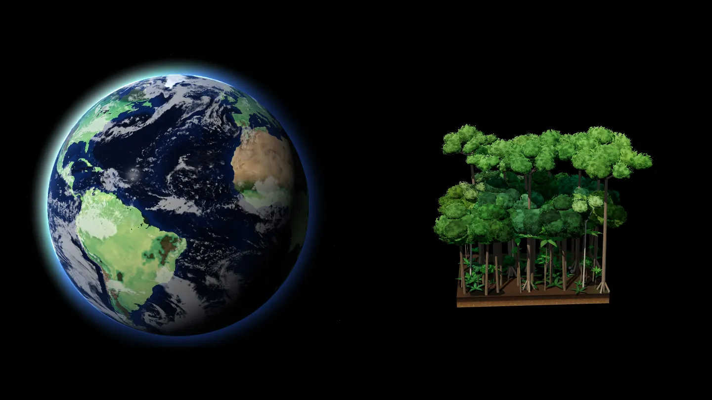
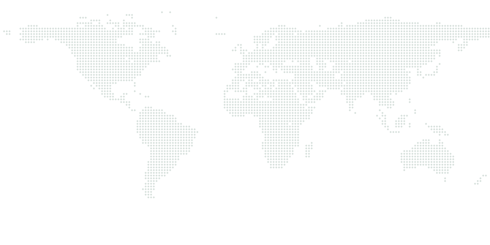
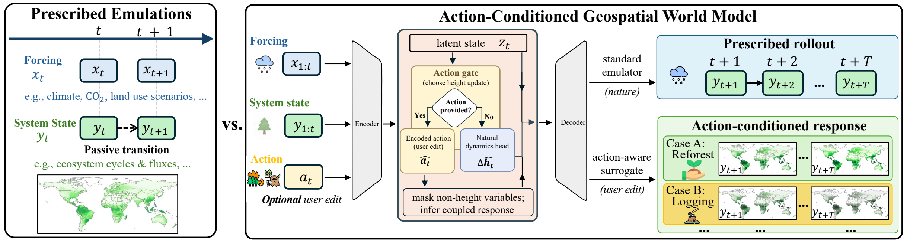
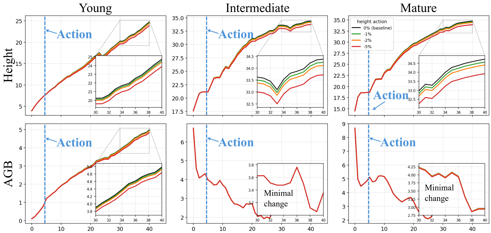

Passive emulator
ŷt+1 = F(y1:t, x1:t)
Replays the simulator under the forcing it is given. There is nowhere to put a decision.
ACM SIGSPATIAL 2026
Log this forest. Burn it. Plant it back. The paper's world model predicts how the whole ecosystem responds, running live in your browser.
Zhihao Wang, Ruichen Wang, Ruohan Li, Lei Ma, George Hurtt, Xiaowei Jia, Gengchen Mai, Shaowen Wang, Yiqun Xie University of Maryland · Rutgers University · UT Austin · UIUC
Loading the model…
01The model, live
Pick an action and a year. The model reruns forty years of this site's real climate, and the forest you chose grows beside the one left alone.
Outside the six regions the model was trained on: exploratory, not a validated result.
2021
—
The response
Your scenario No action ED simulation
The paper's model, all 519,047 parameters, runs in this tab on that site's real climate record, seeded by five years of the Ecosystem Demography simulation. An action is a change in canopy height; the model infers everything else. Verify it against the original PyTorch.
The forest is drawn from the predicted canopy height: trees still standing match the plot left alone, a loss is trees removed, and any recovery the model predicts grows back in the gaps. Which trees go, and the props, are illustration. Actions pass through a learned decoder, so a 2 m cut lands near 2.05 m, and values are December states.
02Digital twin
256 forest cells of the western Amazon, where Brazil, Colombia and Peru meet, each one the paper's model running live. Log a stretch of forest, set a fire, replant, then press play.
Western Amazon2.5°N–5.5°S · 64.5–72.5°W
2021
Carbon above ground, 2021
…
Starts when you scroll here
Each 0.5° cell (about 55 km) runs on its own, as in the paper: nothing spreads between cells. Imagery: NASA Blue Marble. Rivers and towns: Natural Earth.
03How it works
Video went from generators you watch to world models you can act in. Most Earth emulators, for weather and for ecosystems, are still the first kind: they replay a simulator under the climate they are given, with no input for a decision. This paper builds the second kind.
Watch
Interact
Video
Earth
system
WatchVideo generation
InteractInteractive world model

WatchEarth emulators
Weather
Ecosystem · DeepED
Ask both the same question. What if, in 2001, we
ŷt+1 = F(y1:t, x1:t)
Replays the simulator under the forcing it is given. There is nowhere to put a decision.
ŷt+1 = F(y1:t, x1:t, at)
The same forecast, plus an input for actions.
The paper turns emulator training from passive input–output supervision into action-conditioned state transitions, without a single labelled intervention. Its three contributions:
Contribution 1
Simulator runs record no interventions, so every observed change becomes one: if canopy height rose 0.4 m in a year, that is a +0.4 m action. The same runs teach both modes, natural growth with no action and change under one.
Contribution 2
An edit changes canopy height and leaves biomass, soil carbon and the fluxes out of date. Training masks them at the edited step, so the model learns to infer their coupled response from the edit alone.

Contribution 3
Trajectories from six regions on six continents, young to mature stands: 21,315 samples, with test locations held apart from training. Accuracy holds, and responses follow the action.

04Results
Forty-year rollout error at held-out cells, over seven variables. The world model beats the dedicated emulator at two of three stand ages and matches it at the third.
0.162
rRMSE, young forest vs 0.180 for the baseline
0.189
rRMSE, intermediate vs 0.211 for the baseline
7
coupled variables from a single edit
519k
parameters run in a browser tab
| Model | All time steps | Final time step | ||||
|---|---|---|---|---|---|---|
| Young | Inter. | Mature | Young | Inter. | Mature | |
| Persistence | 0.710 | 0.295 | 0.302 | 1.124 | 0.376 | 0.347 |
| Baseline emulator | 0.180 | 0.211 | 0.216 | 0.207 | 0.217 | 0.242 |
| World Model | 0.162 | 0.189 | 0.221 | 0.202 | 0.205 | 0.246 |

05Paper
A Case Study for Terrestrial Ecosystems. ACM SIGSPATIAL '26, Riverside, CA.
University of Maryland · Rutgers University · UT Austin · UIUC
@inproceedings{wang2026earth,
title = {Earth System World Model for What-If Simulations:
A Case Study for Terrestrial Ecosystems},
author = {Wang, Zhihao and Wang, Ruichen and Li, Ruohan and
Ma, Lei and Hurtt, George and Jia, Xiaowei and
Mai, Gengchen and Wang, Shaowen and Xie, Yiqun},
booktitle = {Proceedings of the 34th ACM International Conference
on Advances in Geographic Information Systems
(SIGSPATIAL '26)},
year = {2026},
address = {Riverside, CA, USA},
publisher = {ACM},
doi = {10.1145/3841645.3843371}
}